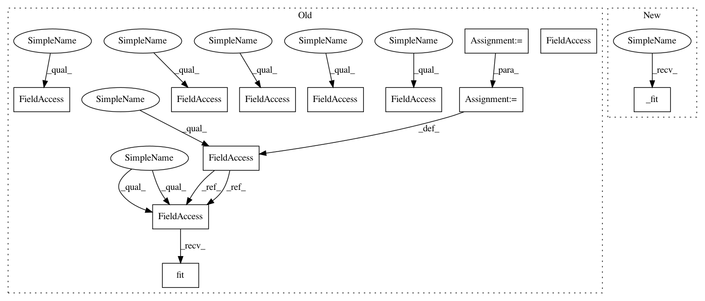

6251434bd1d71c960b1ac340f4645d9e8439ca86,autosklearn/pipeline/components/feature_preprocessing/random_trees_embedding.py,RandomTreesEmbedding,fit,#RandomTreesEmbedding#Any#Any#,25
Before Change
if self.max_leaf_nodes == "None" or self.max_leaf_nodes is None:
self.max_leaf_nodes = None
else:
self.max_leaf_nodes = int(self.max_leaf_nodes)
if self.bootstrap in ["True", "False"]:
self.bootstrap = self.bootstrap == "True"
self.preprocessor = sklearn.ensemble.RandomTreesEmbedding(
n_estimators=self.n_estimators,
max_depth=self.max_depth,
min_samples_split=self.min_samples_split,
min_samples_leaf=self.min_samples_leaf,
max_leaf_nodes=self.max_leaf_nodes,
sparse_output=self.sparse_output,
n_jobs=self.n_jobs,
random_state=self.random_state
)
self.preprocessor.fit(X, Y)
return self
def transform(self, X):
if self.preprocessor is None:
After Change
return self
def fit(self, X, y):
self._fit(X)
return self
def fit_transform(self, X, y=None):
return self._fit(X)
In pattern: SUPERPATTERN
Frequency: 3
Non-data size: 12
Instances
Project Name: automl/auto-sklearn
Commit Name: 6251434bd1d71c960b1ac340f4645d9e8439ca86
Time: 2017-11-21
Author: feurerm@informatik.uni-freiburg.de
File Name: autosklearn/pipeline/components/feature_preprocessing/random_trees_embedding.py
Class Name: RandomTreesEmbedding
Method Name: fit
Project Name: automl/auto-sklearn
Commit Name: 6251434bd1d71c960b1ac340f4645d9e8439ca86
Time: 2017-11-21
Author: feurerm@informatik.uni-freiburg.de
File Name: autosklearn/pipeline/components/feature_preprocessing/fast_ica.py
Class Name: FastICA
Method Name: fit
Project Name: automl/auto-sklearn
Commit Name: 6251434bd1d71c960b1ac340f4645d9e8439ca86
Time: 2017-11-21
Author: feurerm@informatik.uni-freiburg.de
File Name: autosklearn/pipeline/components/data_preprocessing/one_hot_encoding/one_hot_encoding.py
Class Name: OneHotEncoder
Method Name: fit